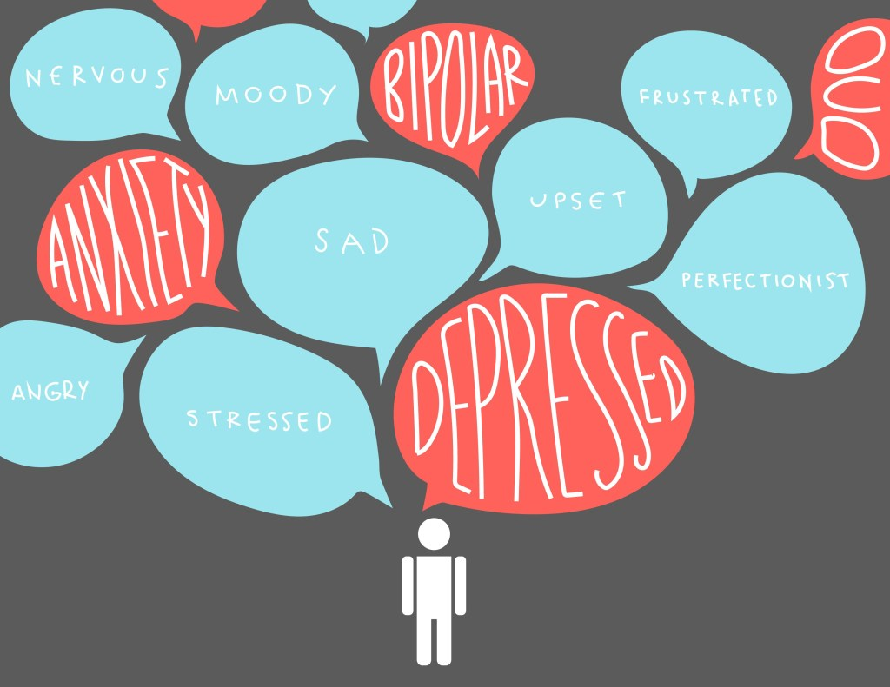
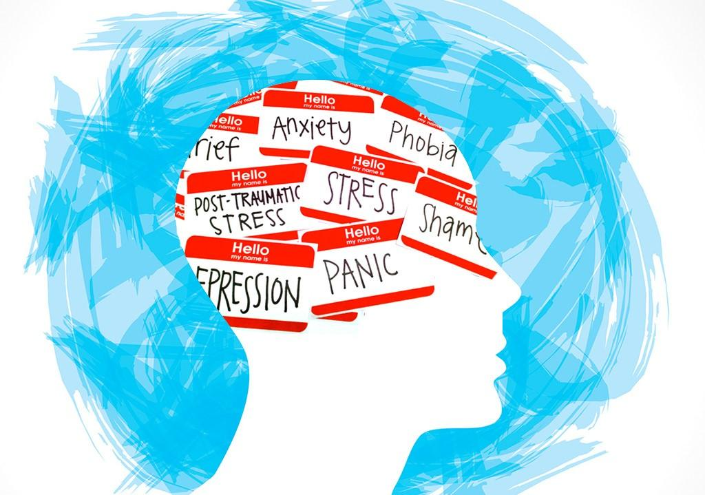

The coronavirus (COVID19) pandemic's impact on mental health
Javed B, Sarwer A, Soto EB, Mashwani ZR || May 3, 2020

A pandemic is not just a medical phenomenon; it affects individuals and society and causes disruption, anxiety, stress, stigma, and xenophobia.
The behavior of an individual as a unit of society or a community has marked effects on the dynamics of a pandemic
that involves the level of severity, degree of flow, and aftereffects.
1 Rapid humantohuman transmission of the SARSCoV2 resulted in the enforcement of
regional lockdowns to stem the further spread of the disease. Isolation, social distancing,
and closure of educational institutes, workplaces, and entertainment venues
consigned people to stay in their homes to help break the chain of transmission
"
It is okay to have depression, it is okay to have anxiety,
and it is okay to have an adjustment disorder. We need to improve the conversation. We all have mental health in
the same way we all have physical health.
"
Children, away from their school, friends, and colleagues, staying at home can have many questions about the outbreak
and they look toward their parents or caregivers to get the answer.
Not all children and parents respond to stress in the same way.
Kids can experience anxiety, distress, social isolation, and an abusive environment
that can have short or longterm effects on their mental health.
Some common changes in children's behavior can be:
Excessive crying and annoying behavior
Increased sadness, depression, or worry
Difficulties with concentration and attention
Unexpected headaches and pain throughout their bodies

To help offset negative behaviors, requires parents to remain calm,
deal with the situation wisely, and answer all of the child's questions to
the best of their abilities. Parents can take some time to talk to their children about
the COVID19 outbreak and share some positive facts, figures, and information.
Parents can also develop a home schedule that can help their children to keep up with their studies.
Parents should show less stress or anxiety at their home as children perceive
and feel negative energy from their parents. The involvement of parents in healthy activities with their children
can help to reduce stress and anxiety and bring relief to the overall situation.